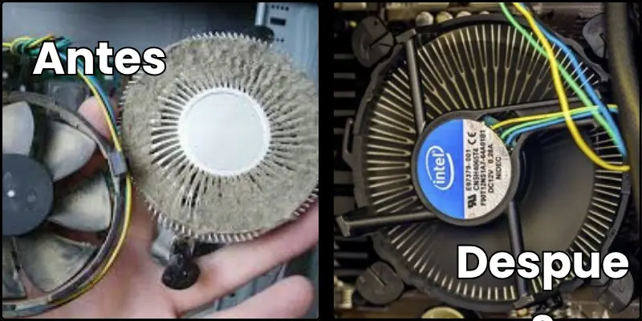

¿Por qué limpiar el ventilador de la CPU?
El ventilador de la CPU puede acumular polvo con el tiempo, lo que puede provocar sobrecalentamiento y daños en el hardware.
¿Qué necesitas?
- Destornillador pequeño
- Aire comprimido o pincel suave
- Una superficie limpia y bien iluminada
- Cinta adhesiva antiestática (opcional)
Pasos para la limpieza
- Apaga y desconecta tu PC
- Abre la caja lateral del equipo
- Localiza el ventilador de la CPU
- Usa aire comprimido para eliminar el polvo
- Revisa que no haya acumulación en los disipadores
- Cierra la caja y vuelve a conectar tu equipo
Consejos finales
Haz este mantenimiento cada 6 meses para asegurar el buen funcionamiento de tu equipo. Si no te sientes seguro, acude a un técnico certificado.